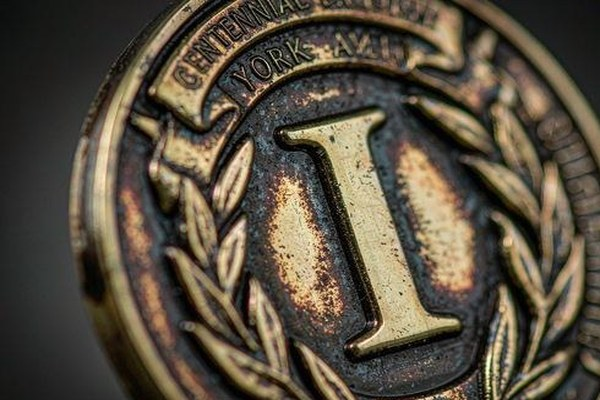
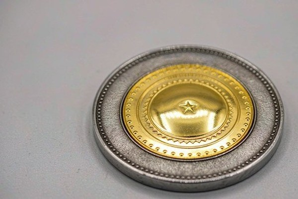

Why Metal Plating Is the Foundation of Coin Design
When starting a custom challenge coin project, many creators focus first on logos and enamel colors. However, metal plating determines how every other element behaves. In challenge coin manufacturing, the base metal — typically high-density zinc alloy, solid brass, or struck bronze — is submerged in an electroplating bath where an electric current deposits a microscopic layer of genuine metal (such as 24k gold, nickel, silver, or copper) across the entire surface.
Because all raised metal ridges, text outlines, and coin edges share this plated metal, the plating serves two critical roles: it functions as the structural linework separating individual enamel wells, and it acts as the reflective backdrop for your entire artwork. A plating that clashes with your color palette can make fine text illegible, while the right plating elevates a simple insignia into a museum-grade keepsake.
Plating options generally fall into four broad categories: polished shiny finishes, darkened antique patinas, modern specialty coatings (like black nickel and rainbow anodization), and dual-metal combinations. Understanding how each style behaves under light is the key to making an informed design choice.
Shiny Platings: Mirror Proof and Brilliant Polish
Shiny platings are polished to a high mirror gloss. When light hits a polished coin, the raised ridges and smooth flat fields reflect light evenly, delivering a crisp, jewelry-like luster that feels prestigious and celebratory.
Shiny Gold
Shiny gold plating is the classic symbol of excellence, executive leadership, and high honors. It offers a warm, radiant tone that pairs exceptionally well with rich jewel tones like deep navy blue, crimson red, and emerald green. For commemorative milestone coins, executive gifts, and formal awards, shiny gold provides unmistakable visual prestige.
Shiny Silver (Nickel)
Shiny silver (often produced with high-purity nickel plating for superior tarnish resistance) delivers a clean, modern, chrome-like shine. Its neutral silvery-white tone provides maximum contrast against dark enamel fills and black lettering. If your organization's brand identity centers on contemporary design, technology, or clean corporate lines, shiny silver is a dependable, high-visibility option.
Shiny Copper and Shiny Bronze
Shiny copper and bronze bring a distinctive, reddish-gold warmth rarely seen in standard currency. The bright polished copper finish reflects vibrant peach and rose undertones, making it a standout choice for anniversary coins (such as 7th or 8th anniversary commemorations), specialized unit tokens, and artisan brand merchandise.

Antique Platings: Rich Depth and Tactile Patina
Antique platings undergo a specialized chemical aging process followed by gentle hand-buffing. The dark chemical patina settles deep into the coin's recessed wells and textures, while the raised surfaces are polished back to a soft metal glow. The resulting contrast gives the coin an immediate sense of history, gravitas, and sculptural depth.
Antique Gold
Antique gold replaces mirror reflections with a rich, burnished amber tone. It is the premier finish for military unit coins, veterans' associations, and fraternal organizations. Because the dark patina accentuates micro-textures, antique gold allows complex crests, eagle feathers, and historical dates to remain legible even when viewed from acute angles.
Antique Silver
Antique silver is widely considered the single best plating finish for coins featuring intricate line work or sculpted artwork. The deep charcoal shadows in the recesses set against the bright pewter highlights on raised areas create an almost photographic monochrome contrast. If your coin includes building facades, detailed machinery, portraits, or fine relief, antique silver captures every nuance.
Antique Bronze and Antique Copper
Antique bronze and antique copper provide a rugged, time-tested aesthetic that feels earned through service. These finishes carry deep chocolate-brown and rustic copper undertones that hide pocket scratches and resist fingerprint marks. They are standard favorites among fire departments, search-and-rescue teams, and outdoor EDC communities.
Modern and Specialty Finishes
Beyond traditional precious metals, modern plating technologies offer distinctive visual aesthetics tailored to tactical, creative, and contemporary applications.
Black Nickel and Dye Black
Black nickel plating provides a gunmetal, reflective dark chrome finish that looks sleek, tactical, and modern. Unlike flat black paint, black nickel maintains a polished metallic sheen that catches ambient light. For police SWAT teams, cyber security units, and tactical gear brands, black nickel provides an imposing, stealthy aesthetic. When paired with bright enamel fills (such as fluorescent yellow, vibrant red, or white), the dark metal outlines make colors pop dramatically.
Rainbow Anodized (Chameleon) Finish
Also known as oil-slick or neo-chrome finish, rainbow plating is achieved through physical vapor deposition or specialized electrochemical anodization. The surface reflects a shifting spectrum of violet, teal, gold, and magenta as the coin turns in your hand. Rainbow finishes are popular for gaming coins, creative brand collectibles, and festival tokens where high novelty and individuality are desired.
Satin and Matte Platings
Satin finishes (satin gold, satin silver, and satin nickel) provide a soft, frosted, non-reflective luster. By sandblasting or chemically etching the surface prior to plating, the metal diffuses light without mirror reflections. Satin platings offer a sophisticated, minimalist look ideal for luxury corporate gifts and architecturally inspired coins.
Dual Plating: Combining Two Metals for Maximum Impact
When a single metal finish cannot fully capture the hierarchy of your artwork, dual plating (also called two-tone plating) offers the ultimate solution. In this process, the coin is first plated completely in one metal (such as shiny silver), masked with a chemical resist over specific zones, and then dipped into a second electroplating bath (such as shiny gold or black nickel).

Dual plating creates natural visual separation between the center emblem and the surrounding border. The most popular combinations include:
- Shiny Gold on Shiny Silver: A brilliant gold center insignia resting on a bright silver coin base, creating a formal two-tone presidential presentation.
- Antique Silver and Shiny Gold: A high-relief antique silver center surrounded by an ornate shiny gold rope edge, combining dimensional storytelling with ceremonial framing.
- Black Nickel and Shiny Gold: High-contrast modern styling where shiny gold emblems gleam against a dark tactical gunmetal field.
Shiny vs. Antique Plating: Side-by-Side Comparison
To help you evaluate the key trade-offs between shiny and antique metal finishes, review the summary table below:
| Feature | Shiny Platings | Antique Patina Platings | Black Nickel & Specialty |
|---|---|---|---|
| Surface Finish | High mirror gloss, brilliant reflection | Hand-buffed matte with dark recesses | Polished gunmetal or iridescent glow |
| Detail Legibility | Best with bold lines and enamel fills | Exceptional for micro-text & 3D relief | High contrast against bright enamel |
| Scratch & Fingerprint Resistance | Can show fingerprints & fine pocket wear | Naturally disguises scratches & smudges | Durable; fingerprints wipe clean easily |
| Visual Character | Prestigious, formal, celebratory | Heritage, earned, rugged, classic | Tactical, modern, high-tech, creative |
| Best Applications | Corporate milestones, awards, ceremonies | Military, law enforcement, 3D sculpts | Tactical units, esports, EDC coins |
How Plating Interacts with 2D and 3D Relief
The choice between 2D vs 3D challenge coin relief directly influences which plating will perform best. Because 2D coins rely on flat levels and distinct enamel boundaries, shiny platings work wonderfully — the raised mirror lines outline each color cleanly.
In contrast, 3D coins feature continuous curved surfaces, anatomical contours, and multi-level terrain. If a 3D coin is plated in mirror shiny gold or silver, the high reflectivity can cause optical glare that flattens out the subtle sculptural ridges. For 3D designs, antique gold, antique silver, or antique bronze are universally recommended because the dark patina settles into the lowest valleys of the mold, creating natural shadows that bring the sculpture to life.
Pairing Plating With Soft and Hard Enamel
Plating also interacts differently depending on whether your coin uses soft enamel or hard enamel:
- Soft Enamel Pairing: Because soft enamel color sits recessed below raised metal ridges, both shiny and antique platings work cleanly. Antique platings enhance the dimensional stepping between the metal walls and the colored enamel base.
- Hard Enamel Pairing: In hard enamel coins, the entire face is ground and polished flat. Shiny gold, shiny silver, and black nickel create a seamless, glass-like jewel surface flush with the metal. (Note: Antique finishes are rarely applied to hard enamel because the final surface polishing removes the antique patina).
- All-Metal No Color Coins: For pure metal designs without color fill, no-color coins rely 100% on plating and sandblasted background textures to create contrast. A shiny raised logo against a recessed sandblasted antique background produces timeless, dignified beauty.
5 Common Plating Mistakes to Avoid
When preparing your coin artwork and plating specifications, avoid these frequent design oversights:
- Low Metal-to-Enamel Contrast: Placing yellow enamel against shiny gold plating, or light gray enamel against shiny silver, causes elements to blend together. Always ensure high value contrast between the metal outlines and adjacent enamel colors.
- Choosing Shiny Plating for Ultra-Fine 3D Faces: Polished mirror plating on complex facial portraits or dense topographical maps reflects harsh glare, obscuring fine facial features. Use antique silver or antique bronze instead.
- Overlooking the Coin Edge: Decorative rim cuts like rope or cross-cut edges look dramatically richer in antique platings because the dark patina fills the grooves of the machining.
- Ignoring Dual Plating for Complex Hierarchies: When your emblem contains two distinct symbols that get lost together, splitting them into gold and silver dual plating provides instant clarity without redesigning the artwork.
- Forgetting to Specify Reverse-Side Plating: Most coins share the same plating on obverse and reverse, but you can request different finishes or selective plating per side to match dual branding requirements.
Plating Selection Framework: How to Choose
To choose the ideal plating finish for your upcoming custom coin, follow this simple 3-step decision framework:
- Identify the Occasion and Culture: If the coin commemorates a prestigious corporate milestone, retirement, or executive achievement, choose Shiny Gold or Shiny Silver. If it honors military brotherhood, law enforcement service, or firefighting camaraderie, choose Antique Gold, Antique Bronze, or Antique Silver.
- Analyze Your Artwork Depth: If the artwork is flat 2D with bold enamel graphics, any shiny or black nickel finish will excel. If the artwork relies on sculpted 3D relief, select an Antique Patina.
- Consider Everyday Handling: If the coin is destined to be carried daily in pockets and handled during coin checks, antique finishes age gracefully and resist smudges better than high-gloss mirror finishes.
Ready to Design Your Custom Coins?
Get a free quote and digital proof in 12 hours. Our team will help you refine your design for the best possible result.
Get Free QuoteFrequently Asked Questions
What is the most popular metal plating for challenge coins?
Antique bronze and antique gold are the most popular choices for military, police, and traditional coins because the dark patina emphasizes fine relief and hides fingerprints. Shiny gold and polished silver are the favorites for corporate awards and commemorative milestones.
What is dual plating on a challenge coin?
Dual plating (or two-tone plating) combines two different electroplated metals on the same coin face — such as a shiny gold raised emblem set against a polished silver background, or an antique silver coin with a bright gold border.
Does the choice of metal plating affect the price?
Standard platings (shiny gold, shiny silver, antique bronze, antique silver, copper, and black nickel) generally carry identical base pricing. Dual plating and special anodized rainbow finishes involve extra masking and plating passes, adding a small per-coin fee.
Will challenge coin metal plating fade or tarnish over time?
Quality electroplated coins use real metal layers sealed with an anti-tarnish protective lacquer. Under normal everyday carry and display conditions, the plating remains vibrant and durable for decades without peeling or discoloration.
Conclusion
The metal plating you select shapes how your challenge coin catches light, how its details are read, and how it feels in the recipient's hand. From the celebratory gleam of shiny gold to the storied depth of antique silver and the tactical presence of black nickel, every finish conveys a distinct mood and message.
If you are debating between two platings or want to see how your logo renders in dual-tone metal, request a free quote and digital proof. Our design specialists will render your artwork across multiple plating options side-by-side within 12 hours, ensuring you make your final choice with complete confidence.